Quantitative Argumentation
Chapter 13 Drill Questions
No answers yet collected
NoteA. Instantaneous flow
The dynamical rule describes for each location in the state space how fast and in what direction the state will move from that location. For each of these questions, a very small region of state space is shown with one or two arrows indicating which way the flow moves from the circle at the root of the arrow.
Exercise 1
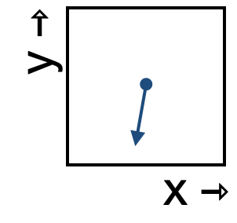
- Which of these best describes the change in the x-component of the state as it moves through this region of state space?
flow-crc-1-3k
- Which of these best describes the change in the y-component of the state as it moves through this region of state space?
flow-crc-2-kus
Exercise 2
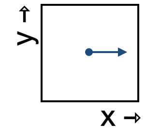
1. Which of these best describes the change in the x-component of the state as it moves through this region of state space?
flow-gwp-1-8e
- Which of these best describes the change in the y-component of the state as it moves through this region of state space?
flow-gwp-2-kus
Exercise 3
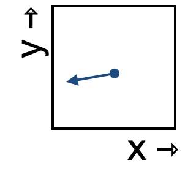
- Which of these best describes the change in the x-component of the state as it moves through this region of state space?
flow-bsc-1-83
- Which of these best describes the change in the y-component of the state as it moves through this region of state space?
flow-bsc-2-p2
Exercise 4
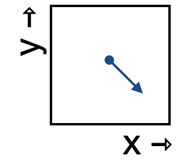
- Which of these best describes the change in the x-component of the state as it moves through this region of state space?
flow-lrk-1-82s
- Which of these best describes the change in the y-component of the state as it moves through this region of state space?
flow-lrk-2-982
- Notice that the previous questions didn’t offer choices like “decreasing slowly” or “increasing quickly.” That’s for a good reason. What is it?
flow-lrk-3-u3s
Exercise 5
Which of these best describes how fast the state will move through this section of space?
flow-ors-1-sy
Exercise 6
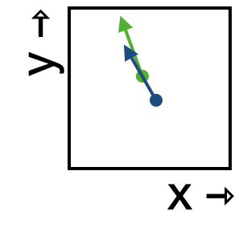
- Which starting point—green or blue—will bring the state to the other flow arrow?
flow-csl-1-lw
- Following the flow through this small region of space, which of the following best describes the shape of the trajectory?
flow-csl-2-lw
Exercise 7
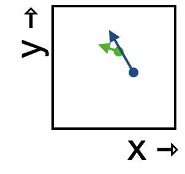
- Following the flow through this small region of space, which of the following best describes the shape of the trajectory?
flow-nds-1-jw
- Which of the following best describes the speed of movement through the state-space region?
flow-nds-2-xls
NoteB. Do state variables influence one another?
In each of the following questions, a flow field is shown. In general, the rate of change of one component of the state can vary (or not) depending on itself or the other components of the state. (Here we have just two components.)
Exercise 8
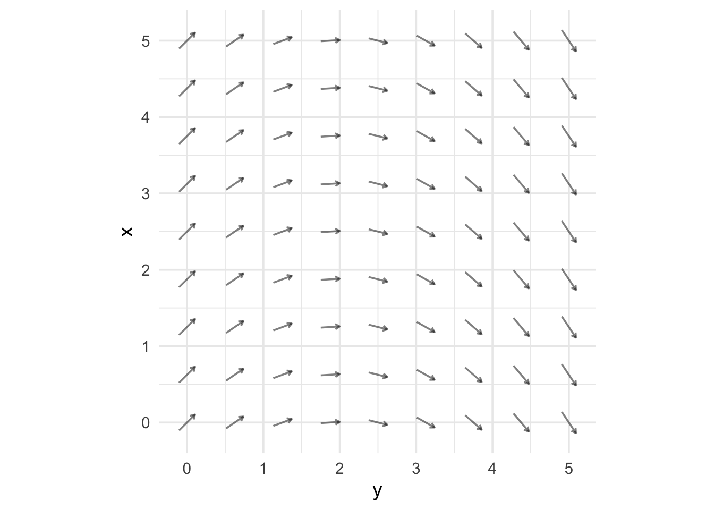
- flow-tss-1-k3 The y-component of the flow depends strongly on the value of x.
Tip
In fact, the flow arrows don’t vary at all with x.
- flow-tss-2-ws The x-component of the flow depends strongly on the value of y.
Tip
The x-component of flow is sometimes up and sometimes down. Which it is depends on the value of y.
flow-tss-3-8d
The x-component of the flow depends strongly on the value of x.
flow-tss-4-is
The y-component of the flow depends strongly on the value of y.
Exercise 9
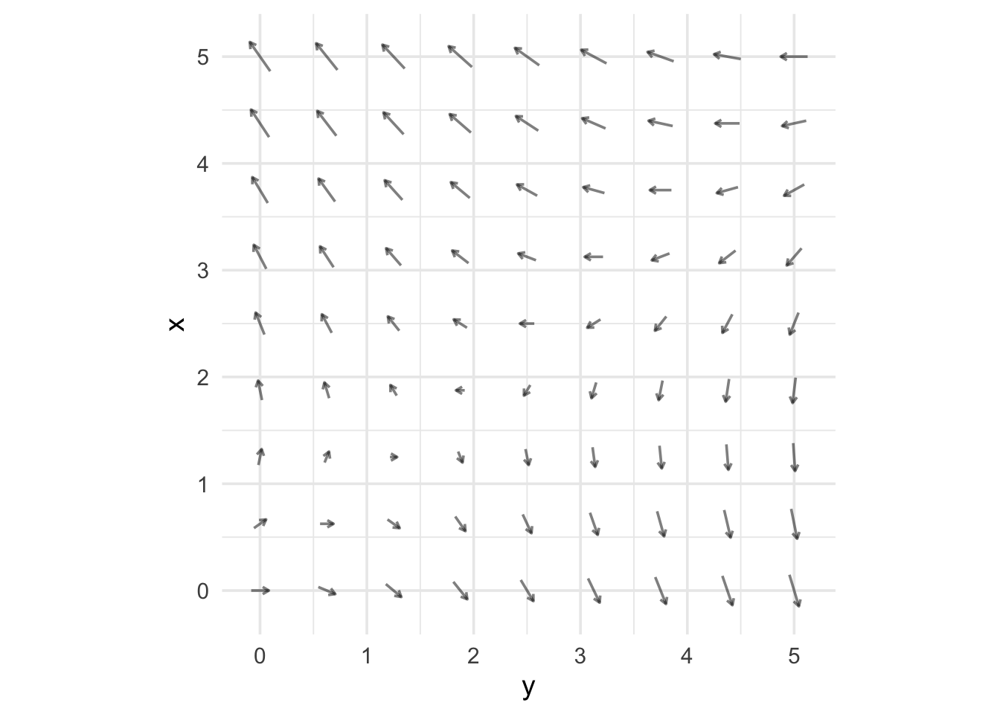
- flow-gsl-1-k3 The y-component of the flow depends strongly on the value of x.
Tip
Focus, for instance, on the column of flow arrows stacked up at y = 0. For different values of x in that column, the flow arrows have different y components.
- flow-gsl-2-ws The x-component of the flow depends strongly on the value of y.
Tip
Focus, for instance, on the row of flow arrows where x = 0. Moving left to right along the y axis, the x-component of the flow goes from zero to strongly negative.
flow-gsl-3-8d
The x-component of the flow depends strongly on the value of x.
flow-gsl-4-is
The y-component of the flow depends strongly on the value of y.
Exercise 10
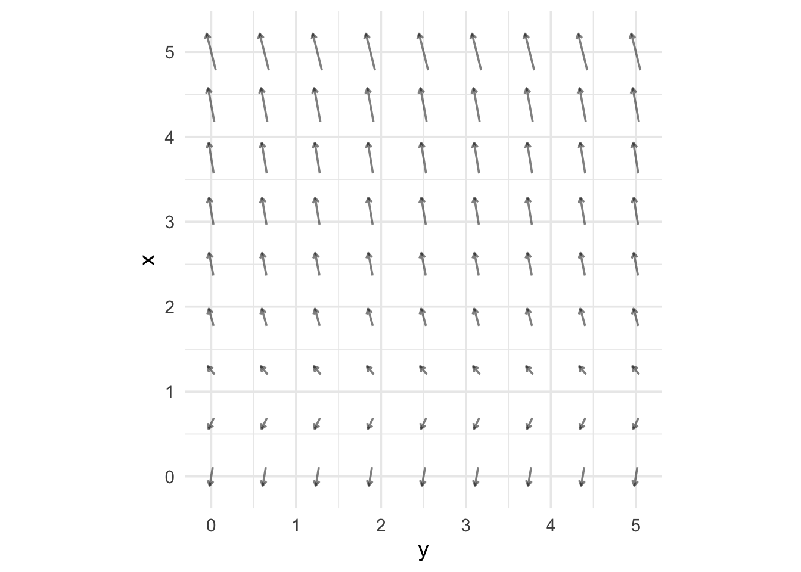
flow-ftb-1-k3
The y-component of the flow depends on the value of x.
flow-ftb-2-ws
The x-component of the flow depends strongly on the value of y.
flow-ftb-3-8d
The x-component of the flow depends strongly on the value of x.
flow-ftb-4-is
The y-component of the flow depends on the value of y.
NoteC. Flows and trajectories
Exercise 11
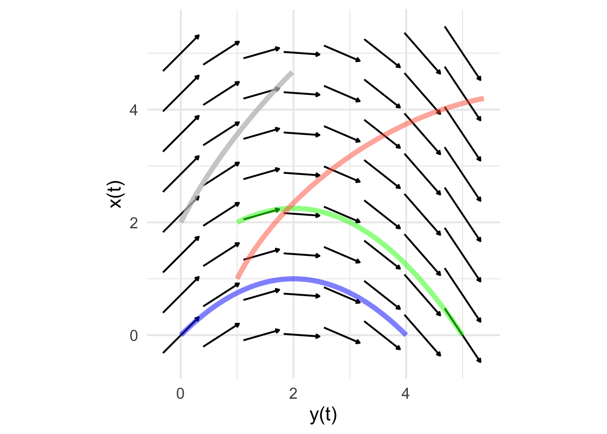
traj-ftd-1-lx
For the flow shown above, red is a trajectory.
traj-ftd-2-l7y
For the flow shown above, green is a trajectory.
traj-ftd-3-kw
For the flow shown above, red is a trajectory.
traj-ftd-3-luy
For the flow shown above, gray is a trajectory.
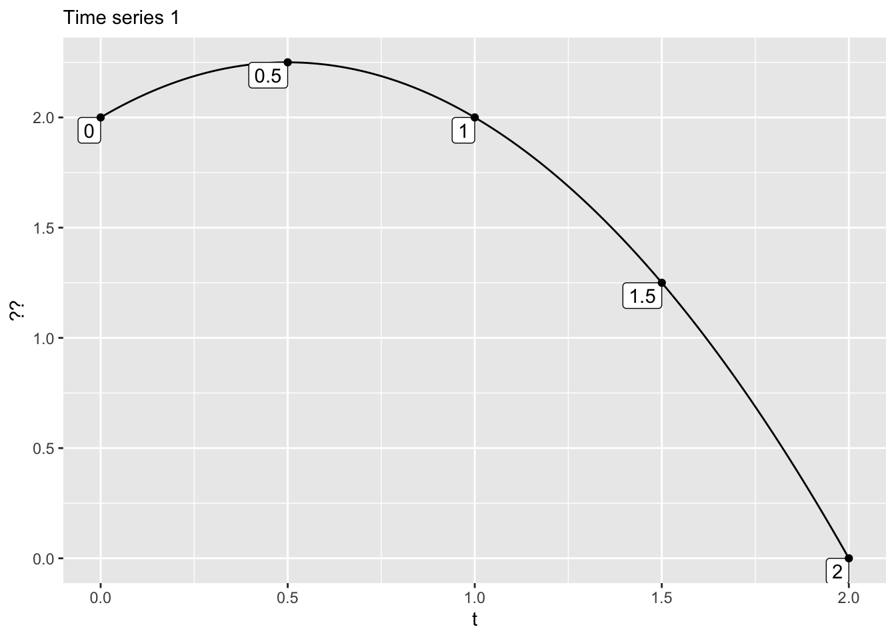
Time series 1 matches which component of which trajectory?
- gray-x
- gray-y
- red-x
- red-y
- green-x
- green-y
- blue-x
- blue-y
ts-ftd-5-wkd
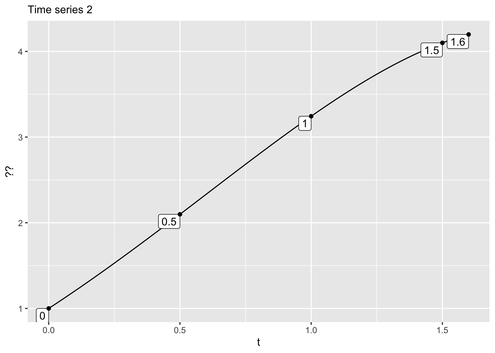
Time series 2 matches which component of which trajectory?
- gray-x
- gray-y
- red-x
- red-y
- green-x
- green-y
- blue-x
- blue-y
ts-ftd-6-wkd
Exercise 12
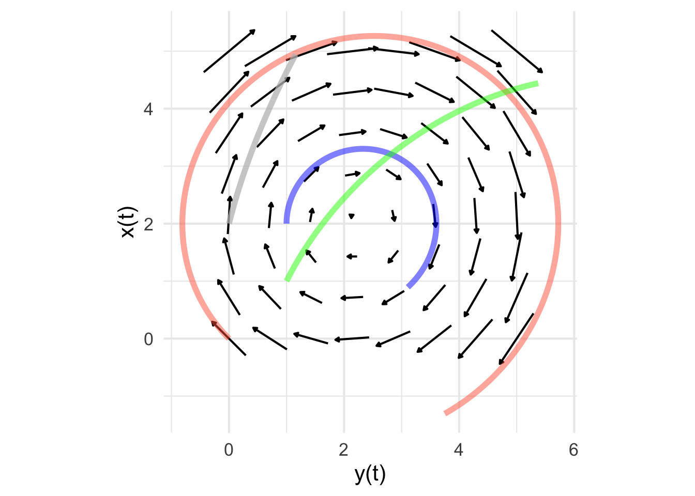
traj-rls-1-lx
For the flow shown above, red is a trajectory.
traj-rls-2-l7y
For the flow shown above, green is a trajectory.
traj-rls-3-kw
For the flow shown above, blue is a trajectory.
traj-rls-3-luy
For the flow shown above, gray is a trajectory.
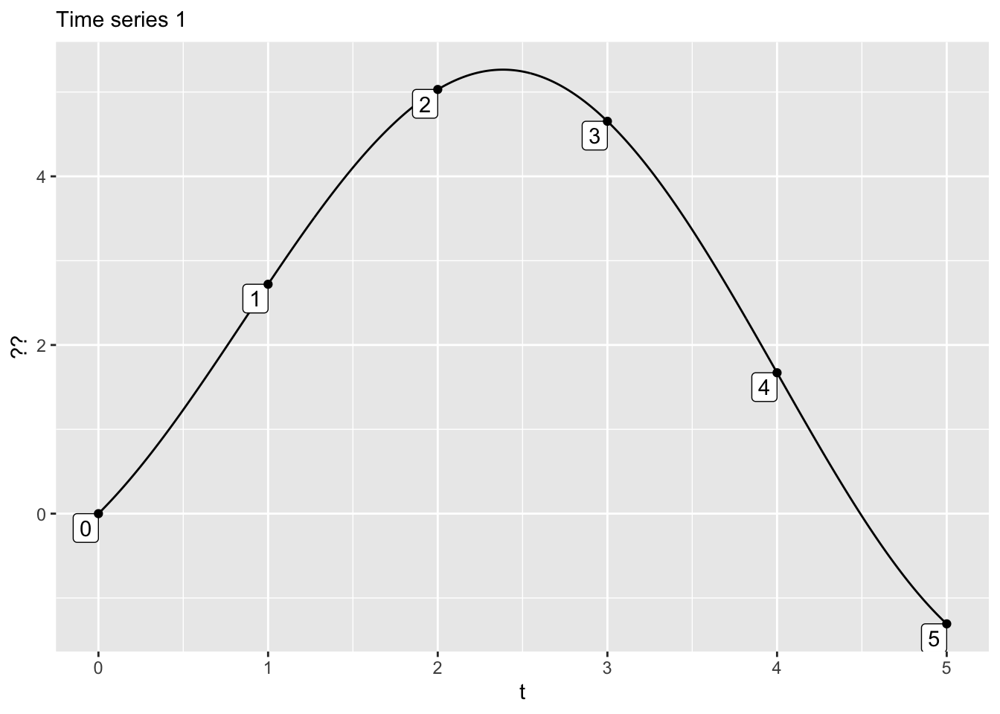
Time series 1 matches which component of which trajectory?
- gray-x
- gray-y
- red-x
- red-y
- green-x
- green-y
- blue-x
- blue-y
ts-rls-5-wkd
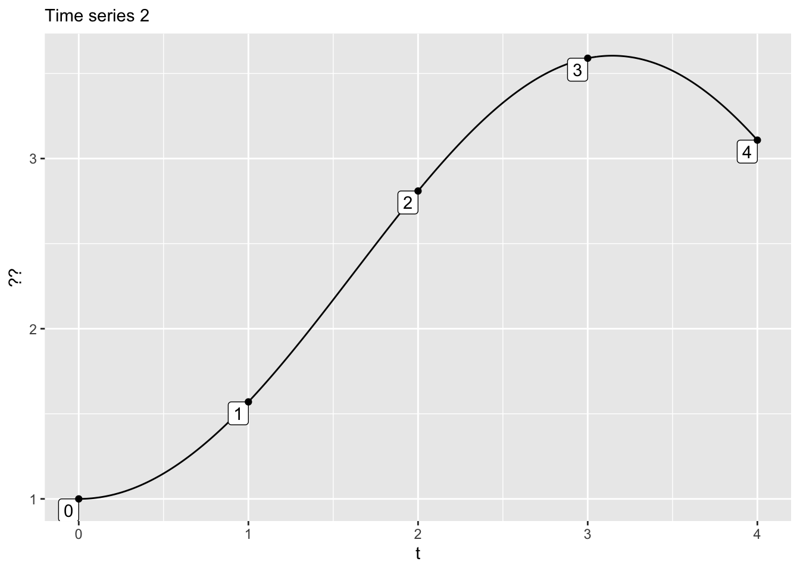
Time series 2 matches which component of which trajectory?
- gray-x
- gray-y
- red-x
- red-y
- green-x
- green-y
- blue-x
- blue-y
ts-rls-6-wkd